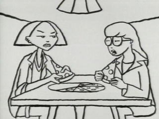

Episode Guide
Episode Guide
|  |
Sealed With a Kick Pilot Episode - Never Aired Written by Sam Johnson and Chris Marcil Song List Entries For This Episode Oops! List Entries For This Episode Transcript For This Episode |
|
Previous None |
Next "Esteemsters" (#101) |
|
Cast |
|---|
|
Regular:
Daria,
Quinn,
Helen,
Jake,
Jane,
Brittany,
Kevin
Guest: None Non-Speaking: None |
|
Plot |
|
Summary:
Daria regrets borrowing a pencil from Kevin when the dim-witted quarterback becomes convinced that she likes him. |
|
Interesting Tidbits |
|
This animated short was created to give the executives at MTV a rough idea of how the show would "look and feel." Since it was basically intended as a "sampler," not a production episode, it has a very unfinished feel: it uses simple black and white drawings, animatic-style, with voices and sound but no music. Karen Disher, production designer for Daria, was tasked with creating the overall look and feel of the show, which would evolve a great deal by the time the show premiered with "Esteemsters" (#101). Where it can be seen:
|
|
Memorable Quotes |
|
Daria - I just got blown off by a guy I didn't even go after. Jane - You should find a safe, legal alternative to killing him. Daria - I already have. When I get through with him, there'll be nothing left but jelly. Jane - Well, you won't have to do anything to his brain. Helen - Do you want to talk to us about anything, honey? (doorbell rings) Daria - I was just about to open up, too. (leaves) Helen - You think she meant it? |